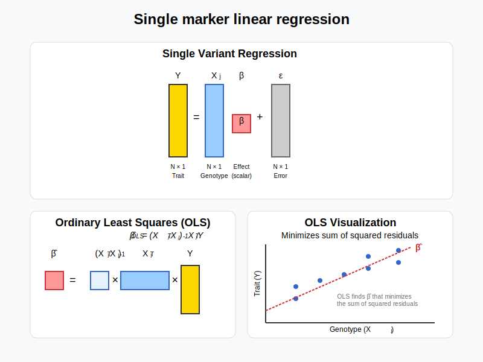

Ordinary Least Squares¶
Single marker linear regression in statistical genetics explores how a specific genetic variant influences a trait by estimating a linear relationship between the variant’s presence and the trait value.
Graphical Summary¶

Key Formula¶
In the single marker linear regression, \(\mathbf{Y} = \mathbf{X} \beta + \boldsymbol{\epsilon}\),
\(\mathbf{Y}\) is the \(N \times 1\) vector of trait values for \(N\) individuals
\(\mathbf{X}\) is the \(N \times 1\) vector of the genotype vector for a single variant across \(N\) individuals
\(\beta\) is the scalar representing the effect size for the single variant (to be estimated)
\(\epsilon\) is the \(N \times 1\) vector of error terms for \(N\) individuals and \(\epsilon \sim N(0, \sigma^2)\)
Using ordinary least squares (OLS), we can derive the estimators for \(\boldsymbol{\beta}\) in matrix form:
Technical Details¶
Formula for a specific individual¶
For individual \(i\), this model can be written as:
Example¶
In this example we demonstrate a basic genetic association analysis for height across 5 individuals with 3 genetic variants.
Following the similar framework of simulating the genotype data and standardization, we further assign the phenotype (height) to each individual and standardize the trait value as well. Then we perform single-marker linear regression for each genetic variant using both the lm function and the explicit formula we obtained abouve to estimate the OLS effect size.
# Clear the environment
rm(list = ls())
# Define genotypes for 5 individuals at 3 variants
# These represent actual alleles at each position
# For example, Individual 1 has genotypes: CC, CT, AT
genotypes <- c(
"CC", "CT", "AT", # Individual 1
"TT", "TT", "AA", # Individual 2
"CT", "CT", "AA", # Individual 3
"CC", "TT", "AA", # Individual 4
"CC", "CC", "TT" # Individual 5
)
# Reshape into a matrix
N = 5 # number of individuals
M = 3 # number of variants
geno_matrix <- matrix(genotypes, nrow=N, ncol=M, byrow=TRUE)
rownames(geno_matrix) <- paste("Individual", 1:N)
colnames(geno_matrix) <- paste("Variant", 1:M)
alt_alleles <- c("T", "C", "T")
# Convert to raw genotype matrix using the additive / dominant / recessive model
Xraw_additive <- matrix(0, nrow=N, ncol=M) # dount number of non-reference alleles
rownames(Xraw_additive) <- rownames(geno_matrix)
colnames(Xraw_additive) <- colnames(geno_matrix)
for (i in 1:N) {
for (j in 1:M) {
alleles <- strsplit(geno_matrix[i,j], "")[[1]]
Xraw_additive[i,j] <- sum(alleles == alt_alleles[j])
}
}
X <- scale(Xraw_additive, center=TRUE, scale=TRUE)
We observe the heights (\(Y\)) for the five individuals as follows, and scale \(Y\):
# assign observed height for the 5 individuals
Y_raw <- c(180, 160, 158, 155, 193)
Y <- scale(Y_raw)
We perform GWAS analysis on each single SNP using OLS:
p_values <- numeric(M) # Store p-values
betas <- numeric(M) # Store estimated effect sizes
for (j in 1:M) {
SNP <- X[, j] # Extract genotype for SNP j
model <- lm(Y ~ SNP) # OLS regression: Trait ~ SNP
summary_model <- summary(model)
# Store p-value and effect size (coefficient)
p_values[j] <- summary_model$coefficients[2, 4] # p-value for SNP effect
betas[j] <- summary_model$coefficients[2, 1] # Estimated beta coefficient
}
# Create results table
OLS_results <- data.frame(Variant = colnames(X), Beta = betas, P_Value = p_values)
The OLS results are:
OLS_results
| Variant | Beta | P_Value |
|---|---|---|
| <chr> | <dbl> | <dbl> |
| Variant 1 | -0.5000913 | 0.390901513 |
| Variant 2 | 0.8525024 | 0.066475513 |
| Variant 3 | 0.9866667 | 0.001844466 |
Or we can use the formula to calculate \(\beta\) directly:
# Calculate β̂ for a single SNP explicitly
calculate_beta_ols <- function(Y, X) {
# β̂ = (X^T X)^(-1) X^T Y
beta_hat <- solve(t(X) %*% X) %*% t(X) %*% Y
return(beta_hat)
}
# Perform GWAS-style analysis: Test each SNP independently using OLS
betas_formula <- numeric(M) # Store estimated effect sizes
for (j in 1:M) {
betas_formula[j] <- calculate_beta_ols(Y, X[,j, drop=FALSE])
}
OLS_results$beta_from_formula = betas_formula
OLS_results
| Variant | Beta | P_Value | beta_from_formula |
|---|---|---|---|
| <chr> | <dbl> | <dbl> | <dbl> |
| Variant 1 | -0.5000913 | 0.390901513 | -0.5000913 |
| Variant 2 | 0.8525024 | 0.066475513 | 0.8525024 |
| Variant 3 | 0.9866667 | 0.001844466 | 0.9866667 |
Supplementary¶
Here we calculate the OLS estimate for joint effects (instead of marginal effects)
# Perform linear regression with all variants
joint_model <- lm(Y ~ X[,1] + X[,2] + X[,3])
# Summary of the regression
summary(joint_model)
Call:
lm(formula = Y ~ X[, 1] + X[, 2] + X[, 3])
Residuals:
1 2 3 4 5
2.418e-01 -2.776e-17 4.163e-17 -1.209e-01 -1.209e-01
attr(,"scaled:center")
[1] 169.2
attr(,"scaled:scale")
[1] 16.54
Coefficients:
Estimate Std. Error t value Pr(>|t|)
(Intercept) 6.886e-16 1.324e-01 0.000 1.000
X[, 1] 8.110e-02 1.793e-01 0.452 0.730
X[, 2] -2.529e-02 2.992e-01 -0.085 0.946
X[, 3] 1.054e+00 3.198e-01 3.296 0.188
Residual standard error: 0.2961 on 1 degrees of freedom
Multiple R-squared: 0.9781, Adjusted R-squared: 0.9123
F-statistic: 14.87 on 3 and 1 DF, p-value: 0.1878
# or we calculate from formula directly
beta_hat_OLS <- solve(t(X) %*% X) %*% t(X) %*% Y # OLS formula without intercept
print("OLS Solution (for joint effects using formula):")
print(beta_hat_OLS)
[1] "OLS Solution (for joint effects using formula):"
[,1]
Variant 1 0.08109589
Variant 2 -0.02528609
Variant 3 1.05424659